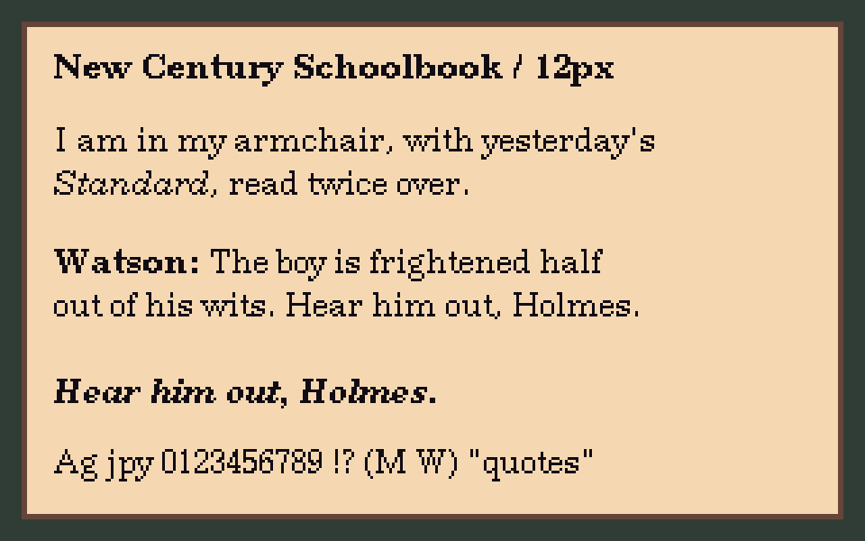
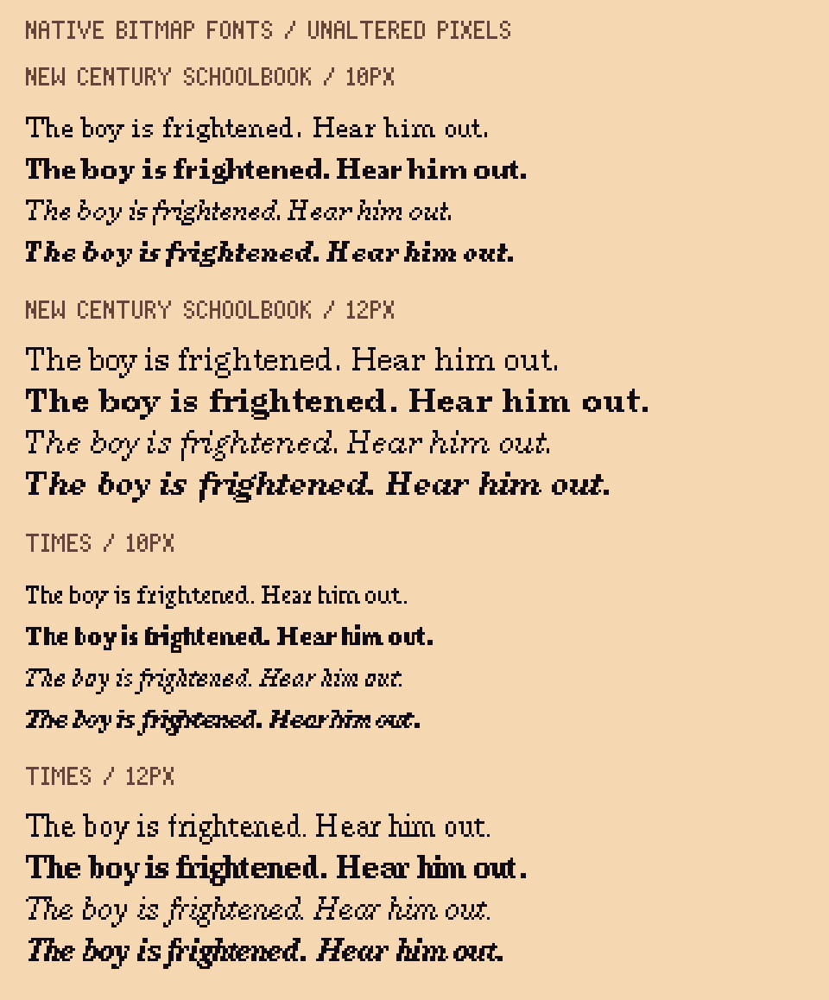

Selected 2 October 2026. Regular, bold, italic and bold italic; original spacing and baseline. Assets are exported; engine integration is pending.

Font assets and integration contract · All 380 delivered glyphs
These are upstream X.Org bitmap fonts, not my designs or rasterized outline fonts. Each group shows regular, bold, italic and bold italic. Original pixels, bearings, advance widths and baseline are preserved.
Selected family: New Century Schoolbook, 12px. The 10px version is included for tighter dialogue boxes; Times is the narrower alternative.

Sources, licence and findings · Upstream licence · Original font metrics